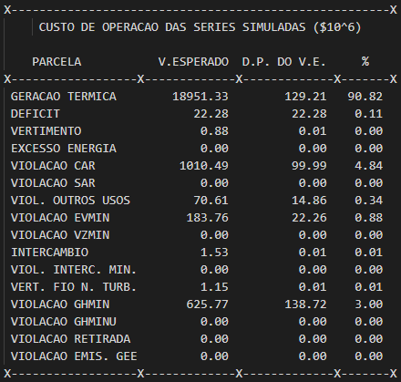

Tutorial¶
Este guia pode ser um bom ponto inicial para o uso do inewave. Como interface de desenvolvimento é recomendado
usar algum editor com um language server com um recurso de autocomplete eficiente para Python, como o
VSCode com PyLance
ou a IDE específica PyCharm. O autocomplete é essencial para fazer uso de todo o potencial do
módulo inewave, além de auxiliar na escrita de códigos melhores.
Leitura, alteração e escrita do dger.dat¶
Seja um sistema de arquivos no qual, dentro de um diretório cujo caminho é:
$ pwd
$ /home/usuario/estudo/pmo_MM_AAAA/
E neste diretório exista um arquivo dger.dat, então o conteúdo deste pode ser lido
através do código:
>>> from inewave.newave.dger import LeituraDGer, EscritaDGer
>>> leitor = LeituraDGer("/home/usuario/estudo/pmo_MM_AAAA/")
>>> dger = leitor.le_arquivo()
É possível analisar todos os parâmetros existentes no arquivo dger.dat:
>>> dger.ano_inicio_estudo
1995
>>> dger.imprime_dados_mercados
True
Se comparado com o conteúdo do arquivo dger.dat:

Como o dger.dat também é um arquivo de entrada para o NEWAVE, este também possui
um recurso de escrita, que pode ser usado na geração de novos decks.
>>> dger.ano_inicio_estudo = 2000
>>> dger.imprime_dados_mercados = False
>>> escritor = EscritaDGer("/home/usuario/estudo/pmo_MM_AAAA/")
>>> escritor.escreve_arquivo()
Ao visualizar as diferenças entre os arquivos:

Para mais informações, basta consultar a referência do objeto DGer.
Realizando a leitura do pmo.dat¶
Seja um sistema de arquivos no qual, dentro de um diretório cujo caminho é:
$ pwd
$ /home/usuario/estudo/pmo_MM_AAAA/
E neste diretório exista um arquivo pmo.dat, então o conteúdo deste pode ser lido
através do código:
>>> from inewave.newave.pmo import LeituraPMO
>>> leitor = LeituraPMO("/home/usuario/estudo/pmo_MM_AAAA/")
>>> pmo = leitor.le_arquivo()
É então constrúido um objeto PMO, que fornece os dados do arquivo através de seus métodos:
>>> pmo
<inewave.newave.modelos.pmo.PMO object at 0x000001BC7663B340>
>>> pmo.ano_pmo
1995
>>> pmo.mes_pmo
5
>>> pmo.versao_newave
'27.4'
Os dados extraídos pelo módulo encontram-se no cabeçalho do arquivo:

É possível obter também outras informações sobre o arquivo pmo.dat, como o custo total de operação:
>>> pmo.custo_series_simuladas
<inewave.newave.modelos.pmo.CustoOperacaoPMO object at 0x0000023B14525640>
>>> leitor.pmo.custo_series_simuladas.custos
[[1.895133e+04 1.292100e+02 9.082000e+01]
[2.228000e+01 2.228000e+01 1.100000e-01]
[8.800000e-01 1.000000e-02 0.000000e+00]
[0.000000e+00 0.000000e+00 0.000000e+00]
[1.010490e+03 9.999000e+01 4.840000e+00]
[0.000000e+00 0.000000e+00 0.000000e+00]
[7.061000e+01 1.486000e+01 3.400000e-01]
[1.837600e+02 2.226000e+01 8.800000e-01]
[0.000000e+00 0.000000e+00 0.000000e+00]
[1.530000e+00 1.000000e-02 1.000000e-02]
[0.000000e+00 0.000000e+00 0.000000e+00]
[1.150000e+00 1.000000e-02 1.000000e-02]
[6.257700e+02 1.387200e+02 3.000000e+00]
[0.000000e+00 0.000000e+00 0.000000e+00]
[0.000000e+00 0.000000e+00 0.000000e+00]
[0.000000e+00 0.000000e+00 0.000000e+00]]
Os dados extraídos pelo módulo encontram-se na respectiva tabela do arquivo:
{kind=link}
Informações específicas de cada custo estão disponíveis através de propriedades do objeto. Maiores detalhes podem ser obtidos na referência do objeto CustoOperacaoPMO.
Realizando a leitura do earmfpm00x.out¶
Seja um sistema de arquivos no qual, dentro de um diretório cujo caminho é:
$ pwd
$ /home/usuario/estudo/pmo_MM_AAAA/
E neste diretório exista um arquivo earmfpm001.out, então o conteúdo deste pode ser lido
através do código:
>>> from inewave.nwlistop.earmfpm00 import LeituraEarmfpm00
>>> leitor = LeituraEarmfpm00("/home/usuario/estudo/pmo_MM_AAAA/")
>>> earm = leitor.le_arquivo()
É então constrúido um objeto Earmfpm00, que fornece os dados do arquivo através de seus métodos:
>>> earm
{'SUDESTE': <inewave.nwlistop.modelos.earmfpm00.Earmfpm00 object at 0x000001BA8C905DC0>}
>>> earm['SUDESTE'].ano_pmo
1995
>>> earm['SUDESTE'].energias_armazenadas[1995]
[[ 0. 0. 0. ... 48.8 44.3 46.6]
[ 0. 0. 0. ... 36.5 38.4 50.3]
[ 0. 0. 0. ... 50.8 51.1 59.3]
...
[ 0. 0. 0. ... 76.2 70.7 70.3]
[ 0. 0. 0. ... 41. 35.3 35.6]
[ 0. 0. 0. ... 59.8 63.2 68.1]]
Os dados extraídos pelo módulo encontram-se no arquivo:

Para maiores informações, basta consultar a referência Earmfpm00.
Realizando a leitura do MEDIAS-SIN.CSV¶
Seja um sistema de arquivos no qual, dentro de um diretório cujo caminho é:
$ pwd
$ /home/usuario/estudo/pmo_MM_AAAA/
E neste diretório exista um arquivo MEDIAS-SIN.CSV, então o conteúdo deste pode ser lido
através do código:
>>> from inewave.nwlistop.mediassin import LeituraMediasSIN
>>> leitor = LeituraMediasSIN("/home/usuario/estudo/pmo_MM_AAAA/")
>>> medias = leitor.le_arquivo()
É então constrúido um objeto MediasSIN, que fornece os dados do arquivo através de seus métodos:
>>> medias
<inewave.nwlistop.modelos.mediassin.MediasSIN object at 0x00000166A7B59370>
>>> meidas.energias_armazenadas_absolutas
[ 0. 0. 0. 0. 0. 0. 120566.76
105553.39 87866.46 74628.94 67384.13 77175.59 103751.27 136444.19
164715.61 179063.05 183767.11 180670.34 170009.45 152021.25 133067.83
119809.86 113629.52 126772.7 154290.17 184992.48 209113.53 221483.92
225683.23 221905.92 209850.84 191386.5 170983.23 155676.92 148345.86
161091.2 185402.48 210185.28 228901.59 238740.84 241397.98 236743.05
221605.42 198691.84 173918.48 153725.42 141373.53 150448.61 174727.58
201001.23 222784.55 234152.59 238611.41 232602.72 216908.98 193381.59
168287.48 148162.03 136430.67 145501.89]
Os dados extraídos pelo módulo encontram-se no arquivo:

Para maiores informações, basta consultar a referência MediasSIN.